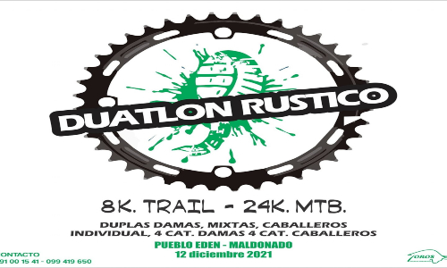
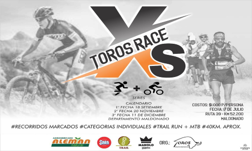

Se viene la 100x100to AVENTURA!

La 100x100to aventura es una de las carreras mas emblematicas de nuestra marca, con un recorrido tanto short (50 kilometros) como extreme de (200km.
Para esta carrera nos movimos al interior del pais para encontrar el recorrido ideal, con este objetivo en mente nos fuimos a Tacuarembo.

La XRace es un torneo compuesto de varias carreras de aventura que invaden con impresionantes paisajes y aventuras inolvidables

La XRace es un torneo compuesto de varias carreras de aventura que invaden con impresionantes paisajes y aventuras inolvidables